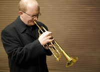
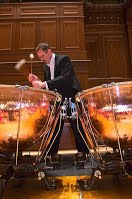

Classical music is art music produced or rooted in the traditions of Western culture, including both liturgical (religious) and secular music.
Historically, the term 'classical music' refers specifically to the musical period from 1750 to 1820 (the Classical period). In a more general sense classical music refers to Western musical traditions considered to be apart from or a refinement of western folk music traditions and encompasses the broad span of time from before the 6th century AD to the present day, which includes the Classical period and various other periods.[1] The central norms of this tradition became codified between 1650 and 1900, which is known as the common-practice period.
| CLASS | EXAMPLE | PICTURE |
|---|---|---|
| strings | VIOLIN | |
| winds | TRUMPET |  |
| Percussion | PIANO | |
| timpani |  |